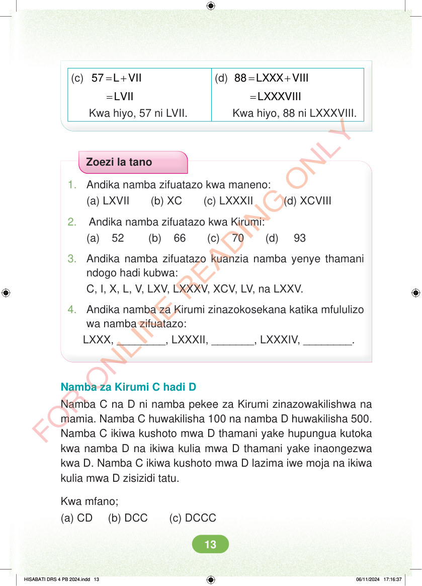

<!DOCTYPE html>
<html lang="sw-TZ"><head><meta charset="utf-8"><meta name="viewport" content="width=device-width,initial-scale=1">
<title>Hisabati: Kitabu cha Mwanafunzi Darasa la Nne</title>
<meta name="title-id" content="pg019_sec001"><meta name="page-section-id" content="19">
<link href="./content/tailwind_output.css" rel="stylesheet"><link href="./assets/libs/fontawesome/css/all.min.css" rel="stylesheet"><link href="./assets/fonts.css" rel="stylesheet">
<style>body{margin:0;background:#eef1ed}main{width:100%;display:flex;justify-content:center;padding:1rem 1rem 5rem;box-sizing:border-box}#content{width:100%;display:flex;justify-content:center}.pdf-page{position:relative;width:min(calc(100vw - 2rem),56rem);aspect-ratio:540.8980102539062/750.6610107421875;background:white;box-shadow:0 4px 24px #0002;overflow:hidden}.pdf-page img{position:absolute;inset:0;width:100%;height:100%;object-fit:fill}</style>
</head><body><main><h1 class="sr-only" id="page-heading">Ukurasa wa 19</h1><div id="content" class="opacity-0"><section role="article" data-section-type="pdf_accessible_page" data-section-id="pg019_sec001" aria-labelledby="page-heading" class="pdf-page"><p class="sr-only" data-id="pg019_gp001_tx001">(c) = + 57 L VII (d) = + 88 LXXX VIII =LVII =LXXXVIII Kwa hiyo, 57 ni LVII. Kwa hiyo, 88 ni LXXXVIII. Zoezi la tano 1. Andika namba zifuatazo kwa maneno: (a) LXVII (b) XC (c) LXXXII (d) XCVIII 2. Andika namba zifuatazo kwa Kirumi: (a) 52 (b) 66 (c) 70 (d) 93 3. Andika namba zifuatazo kuanzia namba yenye thamani ndogo hadi kubwa: C, I, X, L, V, LXV, LXXXV, XCV, LV, na LXXV. 4. Andika namba za Kirumi zinazokosekana katika mfululizo wa namba zifuatazo: LXXX, ________, LXXXII, _______, LXXXIV, ________. Namba za Kirumi C hadi D Namba C na D ni namba pekee za Kirumi zinazowakilishwa na mamia. Namba C huwakilisha 100 na namba D huwakilisha 500. Namba C ikiwa kushoto mwa D thamani yake hupungua kutoka kwa namba D na ikiwa kulia mwa D thamani yake inaongezwa kwa D. Namba C ikiwa kushoto mwa D lazima iwe moja na ikiwa kulia mwa D zisizidi tatu. Kwa mfano; (a) CD (b) DCC (c) DCCC HISABATI DRS 4 PB 2024.indd 13 HISABATI DRS 4 PB 2024.indd 13 06/11/2024 17:16:37 06/11/2024 17:16:37</p></section></div></main><div class="relative z-50" id="interface-container"></div><div class="relative z-50" id="nav-container"></div><script src="./assets/offline-preloader.js"></script><script src="./assets/scorm.js"></script><script src="./assets/base.bundle.local.js"></script></body></html>